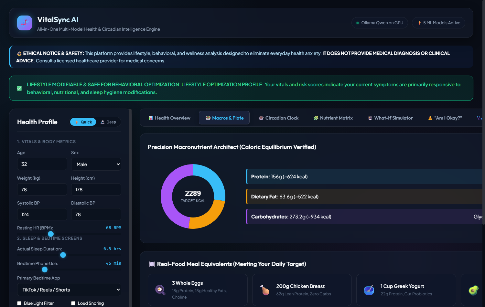

Production Dashboard: Multi-Risk Gauges & Macro Nutrition
🖥️ LIVE DASHBOARD OVERVIEW & RISK DIALS

🥗 DYNAMIC MACRONUTRIENT DONUT

Metabolic Intelligence Highlights
- Live 5-Dial SVG Risk Matrix: Visual color-coded risk probabilities (Cardio 12%, Diabetes 15%).
- Dynamic Macro Partitioning: 1.8g/kg protein target and essential fat floor.
- Real-Time Vitals: Resting BP, Heart Rate & SpO2 with AHA staging.
- Sub-30ms REST API: High-performance FastAPI backend.
🎙️
Speaker Notes: "This slide shows our live production dashboard running on localhost. On the left is the glassmorphic dashboard with the live triage banner and five risk dials. On the right is our nutrition engine with macro partitioning based on the user's lean mass."
24-Hour Caffeine Clock & Bedtime Stimulant Clearance
☕ 24-HOUR CAFFEINE ELIMINATION DECAY CURVE

Pharmacokinetic Half-Life Model
- First-order elimination: $C(t) = C_0 \cdot (0.5)^{t / 5.5}$
- Models 24-hour serum stimulant clearance.
- Bedtime Cutoff Threshold: Flags when active caffeine >25mg at sleep time.
- Curfew Calculator: Computes exact hour to halt coffee.
Anti-Anxiety Demystification
- Explains post-coffee heart palpitations as benign adenosine receptor blockade, NOT heart failure.
- Correlates bedtime screen blue light with melatonin inhibition.
- Reduces sleep latency by 15-30 minutes through behavioral curfews.
🎙️
Speaker Notes: "Caffeine has a 5.5-hour half-life. If you drink 200 mg at 4:00 PM, you still have nearly 100 mg in your blood at 10:00 PM. Our curve maps exact stimulant clearance and alerts users if bedtime caffeine exceeds 25 mg, explaining flutters as harmless adenosine blockade."